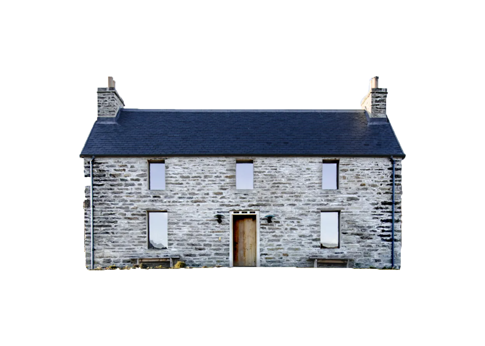

19 APRILE - GIORNO 4
COLAZIONE ED ULTIMO GIRO AD INVERNESS;
PARTENZA DIREZIONE KYLEAKIN (ISOLA DI SKYE);
SOSTE DURANTE IL PERCORSO IN MATTINATA:
LAGO DI LOCHNESS
,
TORRIDON
;
PRANZO A
APPLECROSS
;
ARRIVO A KYLEAKIN NEL TARDO POMERIGGIO, CENA E PERNOTTAMENTO;
TEMPO DI PERCORRENZA: 4 ORE E 50 MINUTI (
MAPPA
);
PERNOTTAMENTO DI DUE NOTTI (19 E 20 APRILE) PRESSO LA STRUTTURA
SAUCY MARY'S HOSTEL
;
COSTI CAMERE: CRIVARO'S € 267 (
MATRIMONIALE CON VISTA MARE
), CALCHINI'S € 349 (
CAMERA TRIPLA
+ CULLA) - TOT € 616.